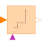

TriggeredAddAdd input to previous value of output, if rising edge of trigger port |

|
Information
This information is part of the Modelica Standard Library maintained by the Modelica Association.
Add input to previous value of output, if rising edge of trigger port
This block has one Integer input "u", one Boolean input "trigger", an optional Boolean input "reset", an optional Integer input "set", and an Integer output "y". The optional inputs can be activated with the "use_reset" and "use_set" flags, respectively.
The input "u" is added to the previous value of the output "y" if the "trigger" port has a rising edge. At the start of the simulation "y = y_start".
If the "reset" port is enabled, then the output "y" is reset to "set" or to "y_start" (if the "set" port is not enabled), whenever the "reset" port has a rising edge.
The usage is demonstrated, e.g., in example Modelica.Blocks.Examples.IntegerNetwork1.
Parameters (3)
| use_reset |
Value: false Type: Boolean Description: =true, if reset port enabled |
|---|---|
| use_set |
Value: false Type: Boolean Description: =true, if set port enabled and used as default value when reset |
| y_start |
Value: 0 Type: Integer Description: Initial and reset value of y if set port is not used |
Connectors (5)
| u |
Type: IntegerInput Description: Integer input signal |
|
|---|---|---|
| y |
Type: IntegerOutput Description: Integer output signal |
|
| trigger |
Type: BooleanInput |
|
| reset |
Type: BooleanInput |
|
| set |
Type: IntegerInput |
Used in Examples (2)
|
Modelica.Blocks.Examples
Demonstrates the usage of blocks from Modelica.Blocks.MathInteger |
|
|
Modelica.Blocks.Examples
Demonstrates the usage of blocks from Modelica.Blocks.MathBoolean |